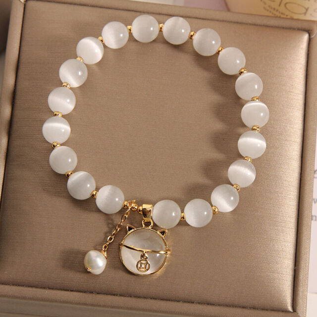

Pearls Princess Bracelet
30.000$
San Benito Bracelet
18.000$
Heart Princess Bracelet
18.000$
Cross Princess Bracelet
15.000$
Gold Princess Bracelet
30.000$
Set Princess Bracelet
30.000$
30.000$
18.000$
18.000$
15.000$
30.000$
30.000$
María Sordo es una diseñadora venezolana, quien al embarcarse en un
viaje hacia Perú después de completar sus estudios de diseño en
diferentes partes del mundo, descubrió su verdadera inspiración.
Beneficiándose del conocimiento de su padre en un taller de diseño
industrial y acudiendo a su madre como principal asesora creativa,
Mónica comenzó a diseñar piezas atemporales de joyería que siguen
tendencias.
Sus colecciones suelen tener inspiración en el movimiento artístico
conocido como biomorfismo, el cual comenzó en el siglo XX y se centra
en el poder de la vida natural, utilizando formas orgánicas que hacen
referencia a la biología. Sus ángulos y formas geométricas se mezclan
con prendas de volumen notable, conformando las piezas statement por
las cuales la diseñadora es reconocida.